This is the catalogue of the images of Tycho Brahe. It holds three series. The lifetime series is every documented likeness made while he lived or from the memory of people who had seen him: the paintings on wood, wall and instrument pedestal, the woodcut, the two Amsterdam engravings and the drawing behind the second, the gilt binding die, the medal, the exile portrait, the watercolours in the finest Mechanica copies, and the Prague effigy that closes the series. The image programme is the wider set of images he controlled: the arms stamp that partners the portrait die, the engraved portrait inserted loose in his books, the emblem-quadrant, the printed views of his buildings, and his portrait on the celestial globes. The afterlife follows the face from the first posthumous plates to the nineteenth-century history painting and the children’s memorial sheet.
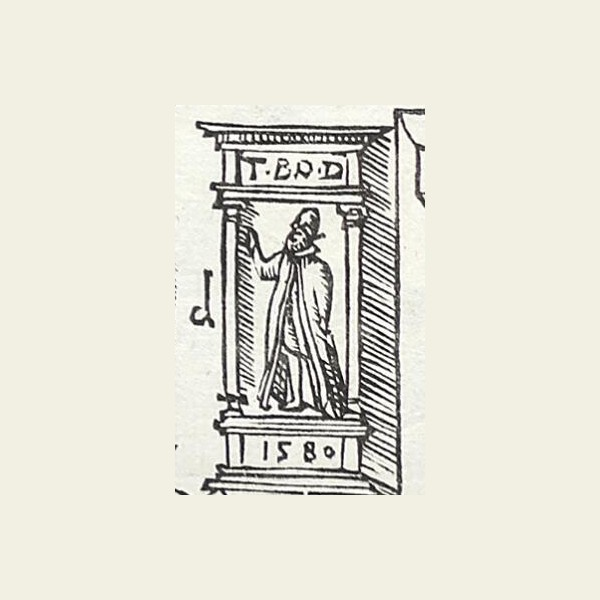
The portraits on the equatorial armillary's pedestalc. 1584 (instrument built) – December 1596 (the recording block's first issue); the inscribed '1580' is Tycho's floruit year, not an execution datelostA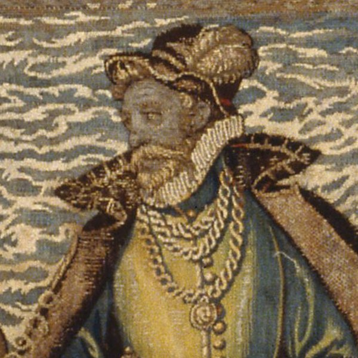
The Kronborg tapestry figure1581–1584 (woven)extantC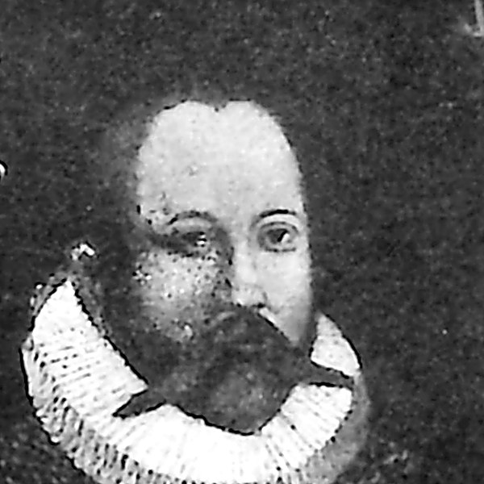
The Steensgaard panelthe likeness c. mid-1580s; the panel untesteduntracedCno plateThe Stjerneborg astronomer cycle1584 – 1594lostA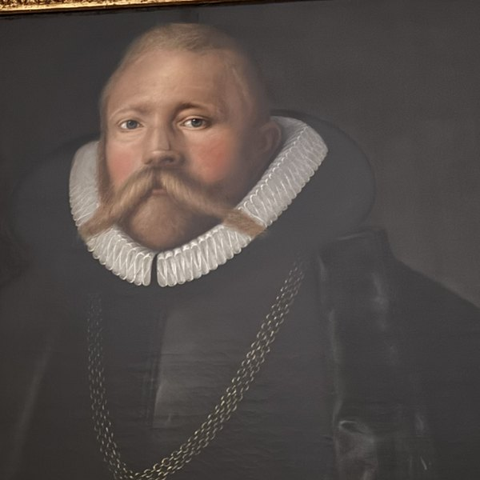
The Frederiksborg oil (attributed to Gemperlin)c. 1586–87 (original); burned 1859lostB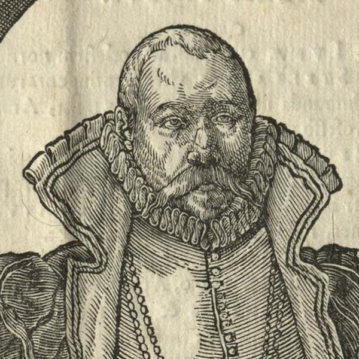
The woodcut 'Effigies' (Westergaard 1376)design 1586; in use by February 1592extantB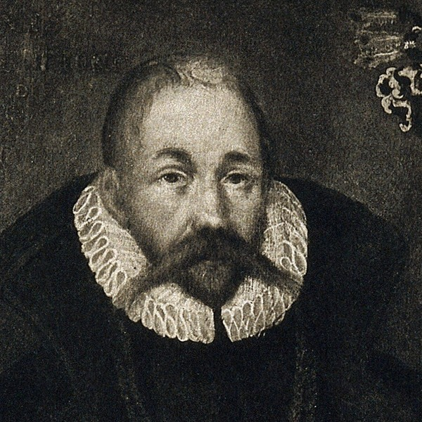
The Prague panel1586–1592 (design family)attestedC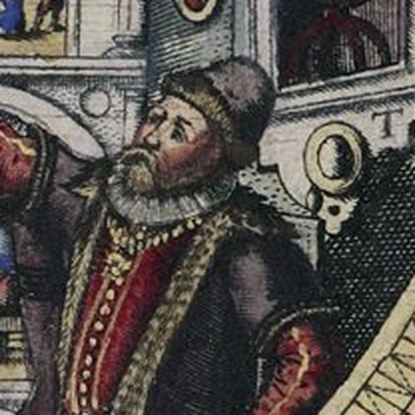
The mural quadrant portrait (Uraniborg)1586–1587 (tablet: 1587)lostA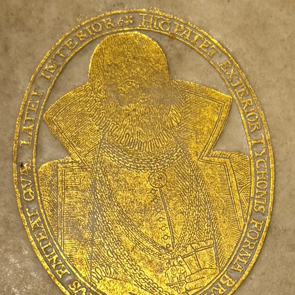
The gilt portrait supralibrosdie by 20 March 1588extantAno plateFrederik II's funeral procession, 15885 June 1588 (the event); plate 1589extantC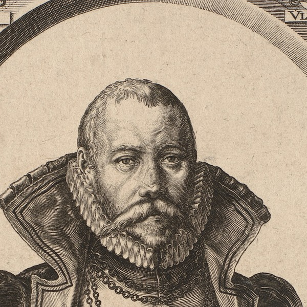
De Gheyn's first engraving (Westergaard 1377)autumn 1590, AmsterdamextantA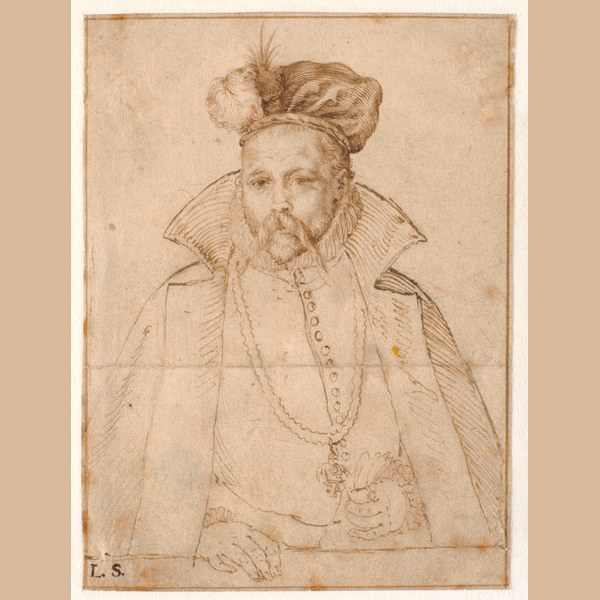
The Copenhagen pen drawing (SMK KKSgb5254)c. 1591–1594extantA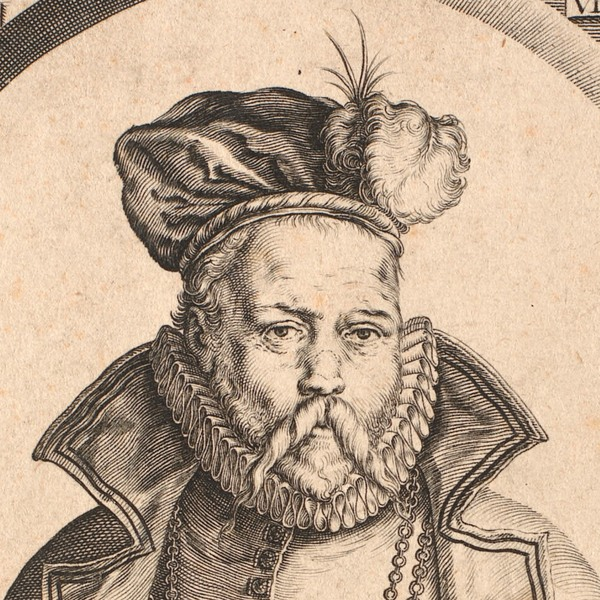
De Gheyn's second engraving (Westergaard 1394)ordered 7 December 1590; printing by early 1595; first book use 1596extantA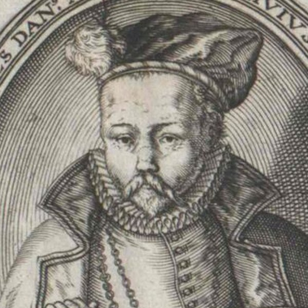
Lambert Cornelisz's print (Westergaard 1409)1595, AmsterdamextantA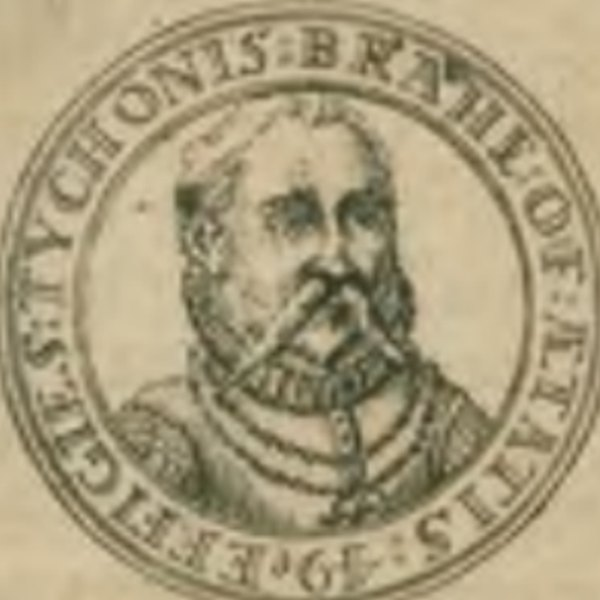
The 1595 portrait medal1595 (dated on the medal)extantB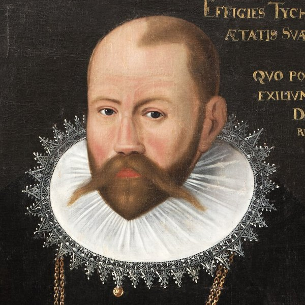
The aetatis-50 portrait (Skokloster / Edinburgh)1597 (type; surviving canvases undated)extantB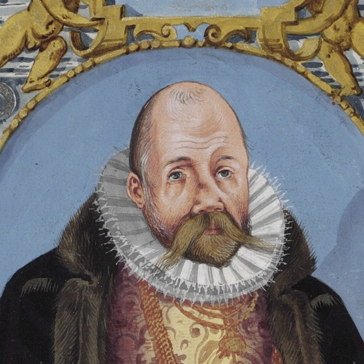
The painted portraits in the finest Mechanica copies1598 – c. 1600extantB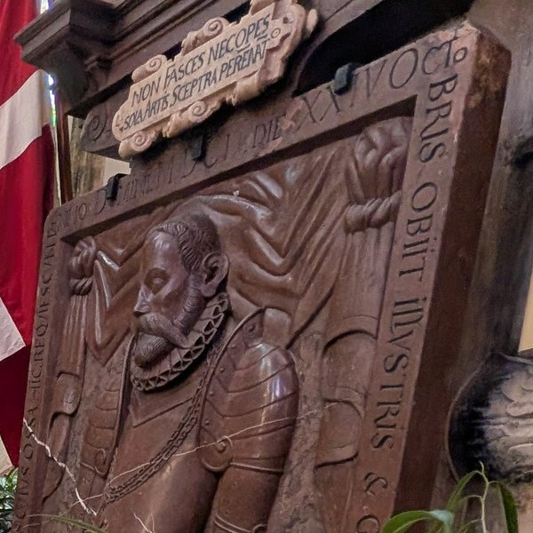
The Týn church epitaph, Praguec. 1604 or some years afterextantBThe printed likenesses, 1586–1596
Sources and method
Four portrait prints of Tycho Brahe were made in his lifetime: a woodcut designed in 1586 and printed on his own press, two copperplates cut at Amsterdam by Jacques de Gheyn II, the first in 1590 and the second ordered that December, and a small copy of the second plate engraved at Amsterdam in 1595 by Lambert Cornelisz. The Danish catalogue of portrait prints numbers them 1376, 1377, 1394 and 1409;1 the two de Gheyn plates are entries 238 and 239 of the New Hollstein.2 His likeness was printed in his lifetime in two other places, inside other images: as a miniature on the van Langren celestial globe of 1594, and as the seated figure in the mural-quadrant plate of the Mechanica of 1598, which reproduces the painting in the quadrant's arc.3 The gilt binding stamp and the medal of 1595 multiplied the face in gold and metal; they have their own records.
Three kinds of document carry the printed portraits. Tycho's letters of 1590 to 1596 name the plates as they were commissioned, received, sent out and judged, and they are the only dated words about them from his hand.4 The meteorological diary kept at Uraniborg dates the arrivals and departures of the men who could have carried a model or an impression between Hven and Amsterdam.5 The objects supply the rest: the inscriptions and heraldry of the plates, the production drawing of the second plate in Copenhagen, the dated copy by Cornelisz, and the impressions pasted or bound into Tycho's books. His own printed works never mention an engraved portrait of himself. The Mechanica names only painted effigies, Gemperlin's figure in the mural quadrant and the pedestal portraits of the equatorial armillary,6 and the one printed trace of the plates in his lifetime is the leaf inserted at the front of the Epistolae astronomicae of 1596 with the epigram facing it.7
A letter's portrait is assigned to one of the four prints by its words. What is ‘printed on the quaternion’ or stands on the first page of the quarto gathering is the woodcut, the only portrait Tycho could print himself: in April 1590 he asked Rantzau for figures ‘cut in boxwood only, for my printer cannot handle copper’.8 What is ‘expressed in copper’, ‘engraved at Amsterdam’ or ‘in the Low Countries’ is a de Gheyn plate; which of the two is decided by the date, since between December 1590 and at least the middle of 1591 only the first existed, and by content, since a complaint about chains fits only the first and a complaint about hemispheres fits only Cornelisz. Where a letter offers none of these, the version is left unassigned. The whole surviving correspondence of 1590 to 1597 has been read for every portrait word with this rule.9
The woodcut, 1586 to 1592
The woodcut shows Tycho bareheaded within a triumphal arch hung with sixteen ancestral quarterings, the beret lying on the parapet, a single chain, and below him a tablet that both engravings repeat: Effigies Tychonis Brahe Ottonidis Dani … aetatis suae anno 40, anno Domini 1586 compl.10 The year is the sitter's fortieth, which he completed on 14 December 1586; it dates the likeness, not the block. The block itself does not survive. Impressions are known on the verso of the title leaf of the prospectus gathering of the Progymnasmata that Tycho distributed in February and March 1592, in Copenhagen and Marburg; a Berlin carrier is extant, the Königsberg copy was reported destroyed, and a Frederiksborg print from Mortensen's collection is a candidate not yet examined.11 The quarterings carry two errors, a Bjelke shield where the Vasa sheaf belonged and the spelling Honner for Rønnow, which passed into the first engraving and were corrected only in the second.12
No source names the cutter. Nielsen inferred from a letter of 1585 and from undeciphered monograms that German wood-cutters worked at Uraniborg, and in 1590 Tycho was still asking Rantzau to send him a man ‘who excellently knows the art of cutting in wood’.13 The likeness belongs to the family of the lost oil portrait of 1586 attributed to Tobias Gemperlin, the Augsburg painter in Tycho's service, whom Tycho's own text, printed at Uraniborg in 1587, records as dead of the plague in Copenhagen.14 Gemperlin can therefore have supplied the likeness of 1586; nothing shows that he cut the block, and he could have had no part in anything made after 1587.
The woodcut is also the ‘praedelineatum’ of Tycho's complaint. When the first copperplate arrived from Amsterdam in 1590 he wrote that it did not imitate everything fittingly ‘as had been drawn beforehand’.15 In February and March 1592 the woodcut was still the portrait his own press could print: he told Landgrave Moritz that the King of Scots' poem would stand ‘on the first page, next to the portrait’,16 and he sent Blotius the quaternion with the effigy ‘printed on it’ and, besides, ‘another, more finely expressed in copper’.17 The gathering is censused as the prospectus of 1592.
The first engraving, Amsterdam 1590
The first copperplate is dated by Tycho's own letters, more closely than any other image of him. On 21 October 1590 he asked Joachim Camerarius in Nuremberg to have the poet Melissus write verses ‘on my effigy, with the arms inscribed around it’, enough to fill one quarto page, and promised that ‘you will shortly, God willing, obtain my icon’ by a messenger he was sending to Nuremberg.18 On 1 December he sent Thomas Savile four impressions ‘of my effigy, lately engraved on copper at Amsterdam’, and asked for epigrams from English poets.19 On 7 December he sent Heinrich Rantzau three, with the judgement that has governed the chronology ever since: the plate had been made ‘against my will and without my prior instruction, loaded with excessive chains, and not imitating everything fittingly, as had been drawn beforehand; for which reason I am having another made there’.20 On 8 December three more went to Scultetus at Görlitz, ‘lately expressed in copper in the Low Countries’.21 The plate was therefore finished at Amsterdam between late October and November 1590.
It is New Hollstein 238: an engraving of 19.0 by 13.0 cm, signed at the bottom centre IDGheijn. Fe. with the I, D and G interlaced, Tycho bareheaded in the arch with the beret on the ledge, wearing the portrait medal of Frederik II on its own chain above further chains, the tablet reading Machinarumque, the motto Non haberi sed esse at the sides, and the two heraldic errors of the woodcut.22 A second state carries the address Marco Sadeler excudit; the registration of impressions shows the Sadeler pulls to come from the same copper, posthumous restrikes rather than a new plate.23 Impressions of the first state are at Copenhagen (SMK KKS4530), Amsterdam (Rijksmuseum RP-P-OB-9945, the museum's title ‘zonder muts’, without cap), Coburg, Dresden, Leiden, London, Rotterdam and Wolfegg.24
No document names the person who carried the commission to Amsterdam. The one traveller recorded between Hven and Amsterdam in 1590 is Arnold Floris van Langren, the nineteen-year-old son of the Amsterdam globe- and map-publisher Jacob Floris, who came to Hven on 6 April 1590 for Tycho's star positions and left for Helsingør with the Scottish courtiers on 23 May.25 His family were engraver-publishers, he himself cut the lettering of their celestial globe of 1594, and that globe carries Tycho's portrait ‘with a privilege, granted to the same Lord Tycho, and kindly shared by him’.26 A plate that reached Tycho ‘against my will and without my prior instruction’, with the costume embellished beyond the model, reads as a publisher's product, and the van Langren house is the probable route of the commission and of the re-order that followed; no document says so. The older account, that Rantzau brokered the commission and that it went to Hendrick Goltzius, who passed it to his former pupil, was a conjecture of Beckett and Christensen in 1921; the print literature never adopted it, and the plate's own signature names de Gheyn as maker.27
Every dispatch of December 1590 asked for poems, and the campaign ran for two years. Hagecius in Prague acknowledged on 29 August 1591 ‘several copies of your effigy, which I have distributed among friends’, one of which Jacob Kurz had sent to a poet in Bavaria.28 Tycho called them ‘those paper effigies, communicated only in passing’, beside the book and the small instrument pictures he had sent with them.29 To John Maitland, Chancellor of Scotland, he sent a second copy on 13 November 1591 with a request for verses to stand by the frontispiece of his works;30 Maitland returned them on 16 May 1592, praising an effigy that ‘renders to the life, by the engraver's praiseworthy industry, the dignity of your face’,31 and Tycho thanked him in August while objecting to the three words that closed the last three epigrams as fit for the Creator alone.32 Peter Young was asked the same March for an epigram on ‘our icon, to be prefixed to the books to be published’.33 What the campaign yielded appears in print in the front matter of the Epistolae astronomicae of 1596: an epigram In effigiem by Albertus Voitus of Wittenberg, and poems by Nathan Chytraeus, Henricus Hoierus, Antonio Riccoboni and Olivierus Tubanellus, the two Italians addressing Magini, and Marinus Plecius.34 None of them describes a hat, a chain or a medal.
The plate stayed in Tycho's possession. After his death it was printed integrally on the title verso of at least one copy of the Progymnasmata of 1602 at Prague, in the position the prospectus of 1592 had given the woodcut, and it then passed to the Sadeler publishing stock.35 The sixteen quarterings on this plate were the ground on which Huizinga argued in 1926 that Shakespeare took the names Rosencrantz and Guildenstern from an impression of it, two of the families named on the arch.36
The second engraving, ordered in December 1590
The second plate, New Hollstein 239, is the corrected replacement Tycho announced to Rantzau on 7 December 1590.20 It measures 18.7 by 13.5 cm and is signed in the field left of the sitter IDGeyn. fe, with the same interlaced initial; it exists in a single state.37 Against the first plate it is a freshly drawn copper: Tycho now wears the plumed beret, the face is visibly older, the Frederik II medal is gone and the chains are reduced to a single doubled chain, the collar lies flat and the doublet is opened, the Vasa sheaf stands where the Bjelke shield had stood and Rønnor replaces Hønnor, and the tablet reads Instrumentorumque while keeping the year 1586; the hands are transposed left for right while the head is not mirrored.38 The New Hollstein notes that ‘the sitter looks older in this print than in no. 238’ and records the drawing in Copenhagen as its design.39
Between the order and the year 1595 the plate is unattested. No surviving letter between 8 December 1590 and 5 September 1595 mentions a second plate, in progress, received or sent.9 The impressions Tycho sent out for epigrams in 1591 and 1592 are never specified by version; the copper he enclosed to Blotius in March 1592 is described only as ‘more finely expressed’ than the woodcut.17 On 9 January 1593, needing designs for the frontispiece and tailpiece of his books engraved, he sent Steenwinckel's pen drawings to Rantzau to have them cut ‘at Hamburg or Lübeck by some excellent artist’ within six or seven weeks, not at Amsterdam.40
The first dated witness of the second design is Cornelisz's copy of 1595. Tycho's letter to Pontanus of 5 September 1595 shows he had it in hand, one impression having reached Hven earlier through Cort Aslaksen, ‘who thought it engraved at Cologne’.41 The copy is reversed against the second plate, that is, in the sense of the Copenhagen drawing. A print takes that sense when it is copied freehand onto a new plate from a printed impression; a copy traced from de Gheyn's drawing, as de Gheyn himself traced it, would have come out in the plate's own sense. The copy was therefore taken from a print, and the second plate was printing by early 1595.42 Mortensen's caption of 1946, ‘model: the pen drawing’, records only that orientation match.43 The dating Altena proposed, ‘probably in 1596’, rested on the diary's bare ‘Pictor’ of 4 May 1596 and on Willem Blaeu's departure for Holland on 24 May, which he took to be the carrying of a new model to de Gheyn; a design already copied and dated in 1595 excludes it.44 The Nationalmuseet's caption of 2006 put the plate ‘presumably about 1591, despite the earlier date’; the Statens Museum for Kunst dates its impression 1594–95; the New Hollstein brackets both plates at about 1595.45
Who carried the second commission, and when, is the open question of this group. The next traveller recorded between Hven and Amsterdam after Arnold is his brother Hendrik Floris van Langren, on Hven from 13 April to 25 May 1593; the globe of 1594 names his journey in its imprint and is the first object outside de Gheyn's own print to show the hatted, medal-less Tycho, under a tablet Aetatis 47.46 From 1594 the Dutch merchant Isaac Pietersz, Pontanus's father, visited Hven and handled Tycho's money at Amsterdam.47 Two readings fit the evidence. Either the re-order was executed soon after December 1590, as Tycho's present tense implies, with the painter brought from Helsingør who worked on Hven from 6 March to 23 April 1591, ‘the work completed’, as the one Danish event that could have supplied a new hatted, older model;48 or the order waited for a courier, Hendrik's visit of 1593 carried the model, and de Gheyn cut the plate in 1593 or 1594. The tests that would decide are set out under the drawing and in the dating section.
From 1596 the second plate is the portrait by which Europe knew Tycho. It is the engraving inserted, loose or pasted to the title verso, in the Epistolae astronomicae of 1596, where Nielsen's bibliography records ‘in several of the copies … a copper-engraved portrait of Tycho Brahe’ without naming it; every digitised copy examined carries this plate.49 It accompanied the presentation copies of the Mechanica of 1598, where a hand-painted replica sometimes stands in for it;50 it was copied in reverse by Cornelisz, copied for Hülsius's Nuremberg reissue of 1601 and for his Mechanica of 1602, and re-cut by Jacob van Meurs for the Hague edition of Gassendi's life in 1655.51 In 1627 one of Tycho's children, writing to Kepler about the plates for the Rudolphine Tables, still expected ‘our late father's portrait, engraved in copper’ to be found ‘in a chest somewhere in the country’.52
The Copenhagen drawing
The only production drawing of the portrait series to survive is the sheet in the Royal Collection of Graphic Art, Statens Museum for Kunst, KKSgb5254: pen and brown ink, 122 by 91 mm, bought in 1810 from the heirs of Lorenz Spengler, keeper of the royal Kunstkammer, whose stamp L.S. is at the lower left; a fold runs across the middle; the verso carries an old ink inscription Thicho Brahe and a small red-chalk monogram HG.53 Friis, who described the sheet before 1890, recorded no inscription on it at all beyond the stamp.54 Tycho is shown half-length in the plumed beret, the head finished in disciplined hatching in the idiom of the burin, the costume summarily indicated, the right hand on a ledge, the left holding gloves.55
That the sheet served the second engraving has been seen since Friis: the head ‘corresponds so closely in form and size’ to the print that ‘there is reason to believe it is this very drawing that was used for the engraving’, and the sheet ‘bears traces of having been traced over’.56 Mortensen repeated the observation in 1946, Altena catalogued the sheet as ‘the design for De Gheyn's second engraving in reverse … traced with a needle for transfer on the copperplate’, and the New Hollstein lists it under no. 239.57 The sheet is the mirror of the print, its head transfers at one to one, and its costume differs from both engravings in collar and chains, which rules out a copy made after either print, since a copyist reproduces his source's costume.58 It cannot have served the first engraving as well, as the museum's record allows: that plate is bareheaded with the beret on the ledge, and a head model wearing the beret cannot have supplied it.59
The attribution has moved three times. Before the 1890s the sheet passed as Goltzius; Friis reported that opinion and the newer one, ‘that it is by Tycho Brahe's painter Tobias Gemperlin’.60 Beckett and Christensen in 1921 gave the drawing to Gemperlin and the commission to Goltzius.27 Mortensen in 1946 revived Goltzius on the strength of ‘the name Goltzius’ that he found on the verso.61 Altena in 1983 placed the sheet in de Gheyn's own hand and printed the red monogram as ‘a false monogram HG’; the museum's record calls it ‘presumably forged’ and lists Gemperle as the attributed maker, with de Gheyn and Goltzius as earlier attributions.62 Three facts settle most of this. Gemperlin was dead by 1587, and the sheet is the transfer drawing for a plate ordered in December 1590. The pen medium is de Gheyn's documented practice for the models of his portrait prints, not Goltzius's, whose portrait models are in metalpoint.63 And the first notice of any verso mark is Mortensen's, half a century after Friis looked and found none.
The sheet is therefore dated by the plate it served: after 7 December 1590, when the plate was ordered, and before early 1595, when Cornelisz copied the printed result. The date ‘circa 1586?’ in the museum's record follows from the Gemperlin attribution and from reading the plates' tablet as a date; the year on the tablet is the sitter's age statement, and the design it records is older than any sheet that carries it.59
Lambert Cornelisz's print, 1595
The fourth print is a small Amsterdam trade engraving: Tycho bust-length in the plumed beret, reversed against de Gheyn's second plate, within an oval inscribed Tycho Brahe Ottonides Dan. Astronomor. huius saeculi princeps 1595, his hand on two celestial hemispheres with an armillary sphere between them.64 Friis saw an impression in the imperial library at Vienna in 1868, which he noted as cut by ‘L. Cornay’, and described a trimmed one in the Kunstindustrimuseum in Copenhagen measuring 9.2 by 7.8 cm to the plate-mark; the engraver is Lambert Cornelisz, active at Amsterdam from 1593 to 1621, whom the authority files record as a pupil of de Gheyn.65
Tycho neither ordered nor liked it. To Pontanus, who had sent him an impression from Amsterdam, he wrote on 5 September 1595: ‘I received together with yours my icon expressed there, although the same had been brought here before through our Conrad, who thought it engraved at Cologne. It does not please me well that the artist has made that image rest on two hemispheres; it seems to carry less gravity … so too that pompous inscription is excessive, for I do not count myself worthy of so great an honour.’66 He said nothing against the beret. The print's standing in the chronology is what its date proves about the plate it copies, set out above.
The year on the plates
All three Amsterdam prints and the woodcut carry, or derive from, the same statement: aetatis suae anno 40, anno Domini 1586 compl., he completed the fortieth year of his age in 1586.10 The convention is the one Tycho's circle used elsewhere: the medal of 1595 reads Aet. 49, the difference of the years 1595 and 1546, and the van Langren globe of 1594 gives Aetatis 47.67 The year 1586 therefore names the likeness, which Gassendi's account places in a sitting late in that year, and not the execution of any plate.68 Read as a date it has misled the catalogues: Friis took the hatted plate as the older of the two because its tablet said 1586; the Nationalmuseet's caption of 2006 writes that ‘the engraving too is dated 1586, but is probably a couple of years younger’; the museum's record for the drawing reads the year as the one ‘in which Gemperle finished his portrait’.69 The plates are dated by the letters of 1590 and by the copy of 1595, and by nothing on their own surface.
The historiography
Friis, in 1890, was the first to describe the drawing and both plates together. Lacking the letters of December 1590, he called the hatted plate ‘the older’ and the bareheaded one ‘the newer’, and dated the latter after 1592 because he took its medal for the portrait chain the young Christian IV gave Tycho on Hven that year; he labelled the order ‘provisional’.70 Mortensen, in 1946, corrected the medal, which is Frederik II's, reversed the order, dated the second plate to 1590 from the Savile letter, and reported the name Goltzius on the drawing's verso.71 Beckett and Christensen, in 1921, had supposed a commission to Goltzius passed to his pupil, and Gemperlin as the draughtsman.27 Huizinga, in 1926, established from the heraldic corrections that the bareheaded plate preceded the hatted one, and read the first plate's quarterings into Hamlet.36 Van Regteren Altena, in 1983, catalogued the lost design for the first plate and the Copenhagen sheet for the second, placed both in de Gheyn's hand, and dated the plates ‘probably in 1596’ from the diary.44 The New Hollstein of 2000 brackets both at about 1595; the Nationalmuseet in 2006 put the second about 1591; the Statens Museum for Kunst dates its first-plate impressions 1588–1590, its second-plate impression 1594–95, and the drawing ‘circa 1586?’; the Rijksmuseum dates its first-plate impression 1593–1597.72
The letters settle the first plate at autumn 1590 and leave the second between its order on 7 December 1590 and the copy of 1595; the drawing follows the second plate. What remains open is the year inside that window, the route of the two commissions to Amsterdam, and the model from which de Gheyn drew the older, hatted face. The records of this chapter carry the bounds, the positions and the tests.
Notes
- Westergaard 1930, nos. 1376 (the woodcut), 1377 (the first de Gheyn plate, with the ‘Marco Sadeler excudit’ state), 1394 (the second) and 1409 (Cornelisz); the numbers as given by Mortensen 1946, pp. 53–77, who follows Westergaard's order. ↩
- New Hollstein, De Gheyn, nos. 238 ‘Brahe, Tycho [c. 1595]’ and 239 ‘Brahe, Tycho, with a hat [c. 1595]’, pp. 92–95. ↩
- The globe: Mosley 2007, pp. 231–232 and fig. 4.7, the sole surviving specimen of the 1594 state at Frankfurt. The mural-quadrant plate: Mechanica 1598, the Quadrans muralis chapter, Opera Omnia V, pp. 29–30: ‘juxta literam T appicta est mei effigies, sellae ad mensam positae assidentis’. ↩
- Tycho's letters, Opera Omnia VII: Camerarius 21 October 1590 (p. 278), Savile 1 December 1590 (p. 285), Rantzau 7 December 1590 (pp. 300–301), Scultetus 8 December 1590 (p. 302), Hagecius 29 August 1591 (p. 305) and Tycho's reply of 1591 (p. 319), Maitland 13 November 1591 (p. 307), 16 May 1592 (p. 336) and 19 August 1592 (p. 338), Blotius and Young 20 March 1592 (pp. 330–331), Rantzau 9 January 1593 (pp. 347–348), Pontanus 5 September 1595 (p. 373); and Opera Omnia VI, p. 308, to Moritz of Hesse, 20 February 1592. ↩
- The Uraniborg diary, Opera Omnia IX, pp. 83, 86, 118, 119 and 139; la Cour's edition of 1876, pp. 144, 149, 172, 176, 208, 210, 248–249. ↩
- Mechanica 1598, Opera Omnia V, p. 30: ‘Hanc effigiem magnâ solertiâ expressit Thobias Gemperlinus eximius artifex … ut vix similior dari possit’; p. 54, on the pedestal of the equatorial armillary: ‘Icones … quae effigies Ptolemaei, Albategnii et Copernici, tum quoque nostram repraesentant’. No other passage of Tycho's printed works speaks of a portrait of himself; the search covered the Mechanica, De nova stella, the Apologia, the Epistolae, the poems and the inscriptions (editor's notes, October 2026). ↩
- Epistolae astronomicae 1596, front matter = Opera Omnia VI, pp. 4–5: the tablet ‘Effigies Tychonis Brahe Ottonidis Dani … aetatis suae anno 40. Anno Domini .1586. compl.’ and Albertus Voitus, ‘In effigiem magnifici et nobilissimi viri D. Tychonis Brahei, mathematici incomparabilis: epigramma’. ↩
- Tycho to Rantzau, 2 April 1590, Opera Omnia VII, pp. 242–243: ‘Quod ad figuras libris praefigendas attinet, eas Buxo solummodo insculptas expeto, neque enim Typographus meus cupreus aptare novit.’ ↩
- Editor's notes, October 2026: the 509 letters of 1590–1597 in the Epistolarium's text and Opera Omnia VI–IX and XIV read for effigies, icon, imago, pictura, sculptor, cuprum, Belgium, Amsterodamum and their forms; thirty-two letters carry the words, and none between 8 December 1590 and 5 September 1595 mentions a second plate. a b
- The woodcut's tablet as transcribed by Mortensen 1946 (W. 1376, ‘Træsnit udført ca. 1586 paa Uraniborg’) and the identical caption on both de Gheyn plates, New Hollstein 238–239: ‘EFFIGIES TYCHONIS BRAHE … ANNO DNI. 1586. COMPL[EVIT]’; printed in the 1596 Epistolae, Opera Omnia VI, p. 4. a b
- The Copenhagen prospectus quaternion (Royal Library) and the Marburg copy (HStAM Best. 3 II Nr. 1070), both verified as the woodcut; the Berlin Sammelband and the lost Königsberg copy after Nielsen 1921, pp. 196–198, and Norlind 1970, p. 164; the Frederiksborg print P-10178, Mortensen's gift of 1950, confirmed as held but unexamined (editor's notes, July 2026). The prospectus went out with letters of 20 February – 22 March 1592. ↩
- Object reading of the Marburg impression (editor's notes, July 2026); the corrections on the second plate noted by Huizinga and Altena 1983, cat. 653–654: ‘The name Hønnor had been changed to Rønner and Belker with its coat of arms replaced by Stormvase.’ ↩
- Nielsen 1921, p. 185; Tycho to Rantzau, 2 April 1590, Opera Omnia VII, p. 242, and the earlier request, VII p. 164: ‘artificem aliquem transmittere, qui sculpendi in ligno artem excellenter calleat’. ↩
- De mundi aetherei recentioribus phaenomenis, p. 284: ‘quique non ita dudum lue Epidemica Hafniae grassante correptus, diem obijt’; the sheets printed at Uraniborg in 1587. The oil portrait: its record. ↩
- Tycho to Rantzau, 7 December 1590, Opera Omnia VII, p. 300: ‘nec omnia decenter, prout praedelineatum erat, imitantis’. ↩
- Tycho to Moritz of Hesse, 20 February 1592, Opera Omnia VI, p. 308: the King of Scots' poem ‘auff der ersten Seit/ nechst dem Effigie, dieweyl er ein König/ vnd mit vnserm Königlichen Stamme beschwägert ist/ stehen wirdt’. ↩
- Tycho to Hugo Blotius, 20 March 1592, Opera Omnia VII, p. 330: ‘effigiem (cuius ideam praeter illam, quae quaternioni impressa est, aliam cupro subtilius expressam hîc adiunxi)’. a b
- Tycho to Camerarius, 21 October 1590, Opera Omnia VII, p. 278: ‘carmen quoddam egregium in effigiem meam, unâ cum circumscriptis Insignibus … ita ut unum latus paginae in 4to typis impressum adimplere possit … Icona autem meam brevi (volente Deo) obtinebis per peculiarem quendam hominem, quem Noribergam … mittere decrevi.’ ↩
- Tycho to Thomas Savile, 1 December 1590, Opera Omnia VII, p. 285: ‘Addidi quaterna Exemplaria meae Effigiei nuper Amsterodami cupro insculptae. Si qui sunt apud vos excellentes poëtae … cuperem, ut argutum aliquod Epigramma in Icona hanc … luderent.’ ↩
- Tycho to Rantzau, 7 December 1590, Opera Omnia VII, pp. 300–301: ‘Adiunxi hîc terna Exemplaria meae effigiei nuper Amsterodami cupro expressae, sed citra voluntatem meam et praemonitionem nimijs monilibus onustae, nec omnia decenter, prout praedelineatum erat, imitantis; ut ob id aliam illic confieri curem.’ a b
- Tycho to Scultetus, 8 December 1590, Opera Omnia VII, p. 302: ‘Addidi his terna meæ effigiei exemplaria, iam nuper in Belgio cupro expressa.’ ↩
- New Hollstein, De Gheyn, no. 238, pp. 92–93: ‘Engraving, 19.0 x 13.0 cm. Signed at bottom centre: IDGheijn. Fe. (I, D and G interlaced) … At left and right of tablet a Latin motto: NON HABERI – SED ESSE.’ The tablet word Machinarumque against the second plate's Instrumentorumque: Friis 1890, p. 229. ↩
- New Hollstein 238, state II, ‘The address Marco Sadeler excudit added at lower right’; the registration of the Rijksmuseum's state-I and Sadeler impressions as pulls of one copper: editor's notes, July 2026. ↩
- New Hollstein 238, collection list; SMK, KKS4530 and KKSgb7575; Rijksmuseum RP-P-OB-9945, ‘Portret van Tycho Brahe op veertigjarige leeftijd (zonder muts)’, 192 × 138 mm. ↩
- Diary, 6 April 1590: ‘Arn. flor. ven.’; 23 May 1590: ‘Discesserunt nobiles Scoti Helsingoram et cum illis Arnoldus F.’ (la Cour pp. 144, 149; Opera Omnia IX, pp. 83, 86). Christianson 2000, pp. 142–143, gives the arrival as 4 April and the departure as 23 May. ↩
- Christianson 2000, pp. 308–311: Arnold ‘engraved the plates for a terrestrial globe at the age of fourteen’, the 1592 privilege, the 1594 globe; Mosley 2007, p. 231, the globe's imprint: ‘Prepared by Jacob Floris; his son Arnold engraved the notes, and his son Hendrik the figures’ and ‘With a privilege, granted to the same Lord TYCHO, and kindly shared by him. 1594.’ ↩
- Beckett and Christensen 1921, p. 21, as reported by Altena 1983, cat. 654: ‘Both Christensen-Beckett and Huizinga assumed that De Gheyn worked from a prototype by the Danish painter Tobias Gemperlin’; the Goltzius route is their conjecture. New Hollstein 238 gives only ‘Possibly after a painted portrait of Brahe by Tobias Gemperlin’. a b c
- Hagecius to Tycho, 29 August 1591, Opera Omnia VII, p. 305: ‘Exempla aliquot tuae effigiei accepi, quae inter amicos distribui. D. Curtius noster quoque unam accepit, misitque in Bavariam ad quendam sibi bene notum et celebrem Poëtam, qui arguto aliquo epigrammate eam ornaret.’ ↩
- Tycho to Hagecius, 1591, Opera Omnia VII, p. 319: ‘Facis quidem mentionem effigierum tibi transmissarum … chartaceae istae effigies obiter saltem communicatae’. ↩
- Tycho to Maitland, 13 November 1591, Opera Omnia VII, p. 307: ‘nostram effigiem, cuius exemplar existimo me tibi antea misisse (ut tamen certo habeas, en alterum addidi) … circa ipsum Frontispicium cognosces’. ↩
- Maitland to Tycho, 16 May 1592, Opera Omnia VII, p. 336: ‘Literis etiam tuis adiunctam effigiem, oris tui dignitatem et temperatam benignitate gravitatem, laudabili sculptoris industria, ad vivum referentem’. ↩
- Tycho to Maitland, 19 August 1592, Opera Omnia VII, p. 338: ‘eruditis et argutis tuis versibus effigiem, unâ cum Urania nostra … ornare … per terna illa verba, quibus tria ultima concluseris Epigrammata. Quae cum saltem Creatori immenso et ineffabili … competant’. ↩
- Tycho to Peter Young, 20 March 1592, Opera Omnia VII, p. 331: ‘Si in Icona nostram libris edendis praefigendam, acuto et succincto aliquo epigrammate luseris’. ↩
- Epistolae astronomicae 1596, front matter = Opera Omnia VI, pp. 4–8; Voitus: ‘parva haec picta Tabella capit: / Quâ facies vultusque viri spectatur honestus’. ↩
- The Copenhagen 1602 copy with the integral title-verso impression and the Sadeler restrikes: editor's notes, July 2026; the posthumous descent in its record. Dreyer's editors note the 1602 Nuremberg Mechanica title carrying ‘effigiem Tychonis similem illi, quam in nostro tom. VI expressimus’, Opera Omnia V, p. 312. ↩
- J. Huizinga, Tien Studiën (Haarlem 1926), pp. 193–200, as reported by Altena 1983, cat. 653 (‘J. Huizinga discovered Shakespeare's use of the print for giving names to Rosenkranz and Guildenstern in Hamlet’) and cited by New Hollstein 238. a b
- New Hollstein, De Gheyn, no. 239, pp. 94–95: ‘Engraving, 18.7 x 13.5 cm. Signed left of sitter: IDGeyn. fe (I, D and G interlaced) … With minor changes in Latin text and one of the inscriptions below the coats of arms as compared to no. 238.’ Impressions at Amsterdam, Dresden, Paris, Wolfegg; Copenhagen, SMK KKSgb7084. ↩
- The twenty-two verified differences between the plates: editor's notes, July 2026; the heraldic corrections and the costume as read by Altena 1983, cat. 654: ‘Brahe himself may have preferred to show his age and to appear in a plumed hat instead of bareheaded, and wearing the single chain … instead of an additional large chain and a smaller one with the medal of Frederick II’. ↩
- New Hollstein 239: ‘The sitter looks older in this print than in no. 238. Drawing in Copenhagen (Van Regteren Altena 1983, II, 654).’ ↩
- Tycho to Rantzau, 9 January 1593, Opera Omnia VII, pp. 347–348: ‘imagines quasdam calamo repraesentatas, quas frontispicio et calci meorum librorum hîc excudendorum adiungere constitui … ut Hamburgi vel Lubecae ab excellenti quodam artifice quam optime incidantur … intra sex vel septem hebdomadas’. ↩
- Tycho to Pontanus, 5 September 1595, Opera Omnia VII, p. 373: ‘Iconem mei isthic expressam unâ accepi, licet et antea eadem per Cunradum nostrum (qui hanc Coloniae sculptam existimavit) huc delata sit.’ Pontanus had just returned from Hven ‘ad patrem Amstelrodamum’ (p. 371). ↩
- Editor's notes, October 2026; the copy's reversal against the plate as recorded by Mortensen 1946, p. 66: ‘gengivet omvendt efter dette; altsaa svarende til det oprindelige Forlæg: Pennetegningen’. ↩
- Mortensen 1946, p. 68, caption: ‘Forlæg: Pennetegningen’. ↩
- Altena 1983, text vol. p. 63: ‘It was probably in 1596 that he produced two copper plates showing the portrait of Tycho Brahe … By showing him his portrait, fresh from the needle, in 1594, Metius may have induced Brahe to ask the Leyden artist for one of himself’; cat. 654, p. 103: ‘Brahe noted in his diary on May 4th Pictor … On the 24th of the same month … Abiit domum in Hollandiam Wilhelmus Batavus … both engravings were completed before the end of 1596.’ The diary rows: 24 May 1596. a b
- Grinder-Hansen (ed.) 2006, fig. 7 caption, p. 31: ‘formentlig o. 1591 trods den tidligere datering’; SMK, KKSgb7084, ‘Værkdatering: ca. 1595’, period 1594–1595; New Hollstein 238–239, ‘[c. 1595]’. ↩
- Diary, 13 April 1593: ‘Helsingora venit cum nobili quodam Germano et fratre Arnoldi’; 25 May 1593: ‘Abiit Hen. Florin.’ (la Cour pp. 208, 210; Opera Omnia IX, pp. 118–119); Christianson 2000, p. 311. The globe's imprint and portrait: Mosley 2007, pp. 231–232, fig. 4.7, ‘having sent his son HENDRIK to Denmark to carefully map the stars’; the reading of the miniature as the second design, held at medium confidence: editor's notes on the globes, August 2026. ↩
- Diary, 19 July 1594: ‘Venit Isaac Peitersz pater Johan. per vesperas’; Tycho to Pontanus, 5 September 1595, p. 373: ‘De re pecuniaria patri tuo scribo’; 25 March 1596: ‘patri tuo Amstelrodamum … restitui curabo’. Altena 1983, cat. 654: ‘The traffic between Uraniborg and De Gheyn may have been facilitated by Isaac Pietersz, commercial agent to the king of Denmark.’ ↩
- Diary, 6 March 1591: ‘Rediit Mgr. Petrus Helsingora cum pictore’; 23 April 1591: ‘Abiit famulus Pict., opere confecto’ (la Cour pp. 172, 176). The painter and his work are unidentified. ↩
- Nielsen, Dansk Bibliografi, §430: ‘I flere af Eksemplarerne er paa denne Side indklæbet et kobberstukket Portræt af Tycho Brahe’; New Hollstein 239, ‘Used in: Tychonis Brahe, Epistolarum astronomicarum libri, Uraniborg 1596’; the four digitised copies examined (Washington, Zürich, Florence, Dresden): editor's notes, July 2026, and the record of the inserted book portrait. ↩
- The inserted author portrait and the watercolour replicas, with the copy census of the Mechanica of 1598. ↩
- The posthumous copies; New Hollstein 239, copies a (dated 1601, with French text) and b (Jacob van Meurs); the Gassendi frontispiece. ↩
- Opera Omnia XIV, p. 293 (1627): ‘Jch vermeine, eß werde des herrn vattern selig: contrafeth jn kupfer gestecht in eine truhe an einem orth auf dem lande stehend sich befinden’. ↩
- SMK, KKSgb5254: pen and brown ink (‘Pen, brown ink, and red chalk’), 122 × 91 mm, acquired 1810, ‘Fold under midten’, the red-chalk ‘HG’ ‘formentlig forfalsket’, the collector's stamp of Lorenz Spengler (Lugt 1763); Altena 1983, cat. 654: ‘Inscribed in verso Thicho Brhag and with a false monogram HG (H. Goltzius) in red chalk.’ ↩
- Friis 1890, p. 222: ‘Indfatning eller Underskrift findes ikke, dog er der med et Stempel paatrykt Bogstaverne L. S., der vise, at Tegningen engang har hørt til Kunstkammerforvalter Lorentz Spenglers Samling.’ ↩
- Friis 1890, p. 222: ‘Hovedet er temmelig omhyggelig udført, hvorimod Draperiet er flygtigt skizzeret. Tyge Brahe er fremstillet en face, med Baret paa Hovedet … Den højre Haand hviler paa et Bord eller en Plade og i den venstre holdes Handskerne.’ ↩
- Friis 1890, p. 223: ‘Selve Portrætet svarer i Form og Størrelse saa nøje til den ovennævnte Pennetegning, at der er Grund til at tro, at det netop er denne Tegning, der er bleven benyttet ved Stikningen. Forøvrigt bærer Tegningen Spor af, at der er kalkeret over den.’ ↩
- Mortensen 1946, p. 66: ‘Ved Pennetegningens Overførelse paa Kobberpladen — Tegningen bærer Spor af Kalkering’; Altena 1983, cat. 654: ‘The design for De Gheyn's second engraving in reverse … Pen and brown ink; 12.2 x 9.1 cm. Traced with a needle for transfer on the copperplate’; New Hollstein 239. ↩
- The examination of the sheet and the comparison with both plates: editor's notes, July 2026. ↩
- SMK, KKSgb5254, the record's note: the drawing ‘må formodes at være forlæg for Jacques de Gheyns kobberstik (The New Hollstein 239; KKSgb7084), muligvis også for de Gheyns andet kobberstukne portræt af Brahe (The New Hollstein 238; KKSgb4530 og KKSgb7575). Begge kobberstik … er forsynet med dateringen “1586”, formentlig det år, hvor Gemperle færdiggjorde sit portræt’; ‘Værkdatering: ca. 1586?’. The answer, claim by claim: editor's notes, October 2026. a b
- Friis 1890, p. 222: ‘Det var tidligere den almindelige Mening, at Tegningen skyldtes Henrik Goltzius; men nu antager man snarere, at den er af Tyge Brahes Maler Tobias Gemperlin.’ ↩
- Mortensen 1946, p. 65: ‘en fin udført Pennetegning, der almindelig antages, at være udført af Gemperlin. Men, paa Tegningens Bagside staar Navnet Goltzius.’ ↩
- Altena 1983, cat. 654, in ‘Catalogue II: The drawings by Jacques de Gheyn II’; SMK, KKSgb5254, production: ‘Gemperle, Tobias — Attributed; Gheyn II, Jacques de — Previously attributed; Goltzius, Hendrick — Previously attributed’. ↩
- Reznicek's observations on the two artists' portrait models, pen for de Gheyn and metalpoint for Goltzius, with the comparison of the sheet against de Gheyn's Marnix model (Altena cat. 694): editor's notes, July 2026. ↩
- Friis 1890, p. 228: ‘Under selve Portrætet staa 2 Hemisfærer, og i den ovale Indfatning læses: »Tycho Brahe Ottonides Dan. Astronomorum hujus sæculi Princeps. 1595«’; Mortensen 1946, p. 68, W. 1409, ‘gengivet omvendt efter dette’. ↩
- Friis 1890, p. 228: ‘et Kobberstik, som jeg saa i det k. k. Hofbibliothek i Wien 1868, og om hvilket jeg har noteret, at det var stukket af L. Cornay’; the Kunstindustrimuseet impression ‘9,2 Ctm. højt og 7,8 Ctm. bredt’; CERL Thesaurus, cnp02079345: Lambert Cornelisz, active 1593–1621, ‘Cornely’ among his name forms, de Gheyn II as teacher. ↩
- Tycho to Pontanus, 5 September 1595, Opera Omnia VII, p. 373: ‘Non satis placet, quod duobus haemisphaerijs imaginem istam inniti fecerit artifex. Videtur id minus gravitatis prae se ferre … sic quoque pomposa illa circumscriptio nimia est, neque enim tanto me dignor honore.’ ↩
- The medal: Mortensen 1946, p. 74: ‘Effigies: Tychonis: Brahe: O: F: AD: 1595. Aet. 49.’, see its record; the globe: Mosley 2007, fig. 4.7, and editor's notes on the globes, August 2026. ↩
- Gassendi's account of the sitting late in 1586, carried in the record of the lost oil portrait; the convention ‘aetatis 40 … 1586’ against the birth date 14 December 1546. ↩
- Friis 1890, p. 229: ‘I Henhold til Underskriften maatte Portrætet være fra 1586’; Grinder-Hansen (ed.) 2006, fig. 6 caption, p. 30: ‘Også stikket er dateret 1586, men er nok et par år yngre’; SMK, KKSgb5254: ‘formentlig det år, hvor Gemperle færdiggjorde sit portræt’. ↩
- Friis 1890, p. 229: ‘Foreløbig ville vi blot kalde det ene af disse Stik … det ældre, og det andet … det nyere’; ‘en anden Kjæde med et Billede, som man véd at Tyge Brahe modtog af den unge Kong Christian IV ved dennes Besøg paa Hven 1592. Billedet kan saaledes ikke være ældre end fra sidstnævnte Aar.’ ↩
- Mortensen 1946, p. 62 (the medal: ‘da er dette urigtigt, thi, det var en Medaille med sit eget Portræt i en gylden Kæde Kongen forærede Tycho Brahe’) and p. 66 (‘Graveringen af Stikket er da formentlig fuldført 1590; thi, den 1 Dec. 1590 skriver Tycho Brahe i et Brev til Sir Thomas Savello … Ordenen er omvendt’). ↩
- New Hollstein 238–239 ‘[c. 1595]’; Grinder-Hansen (ed.) 2006, p. 31; SMK, KKS4530 and KKSgb7575 ‘1588–1590’ (‘Værkdatering: ca. 1590’), KKSgb7084 ‘1594–1595’, KKSgb5254 ‘ca. 1586?’; Rijksmuseum RP-P-OB-9945, ‘1593–1597’. ↩